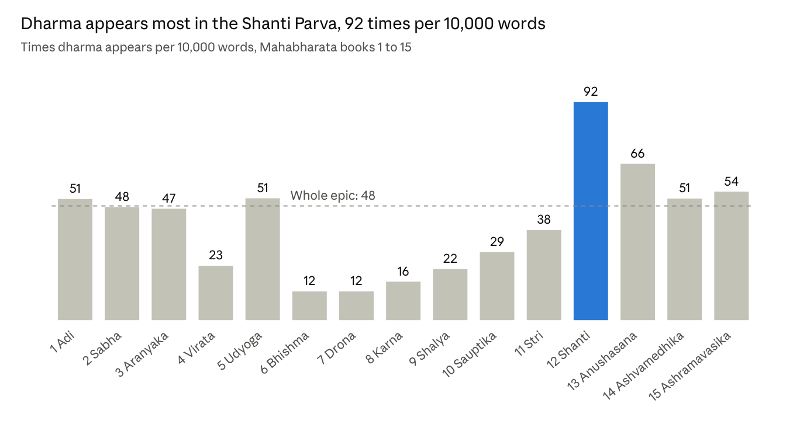
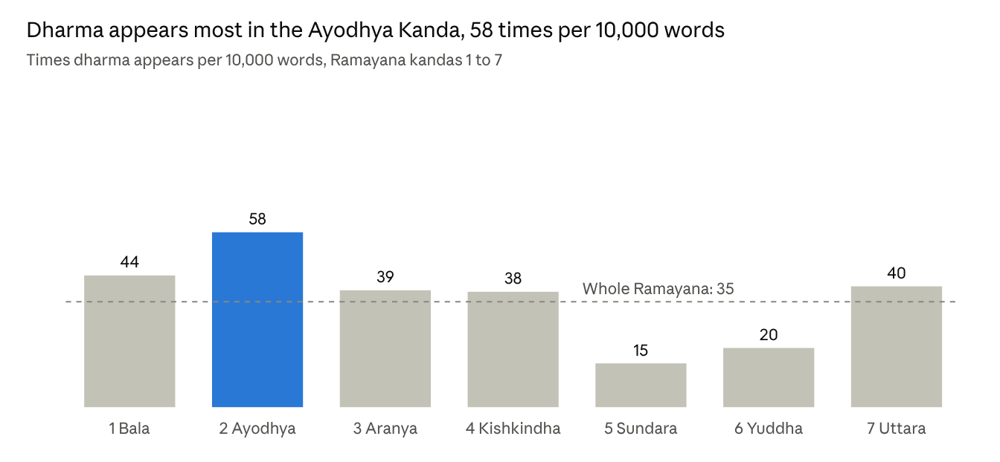
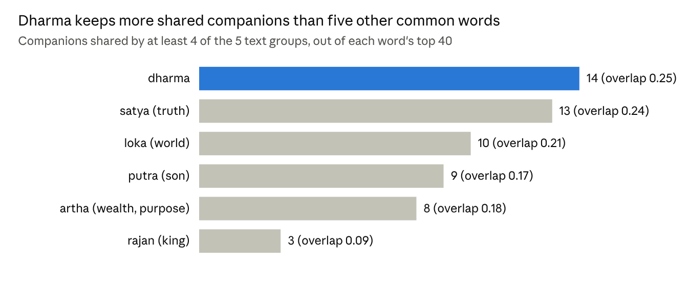
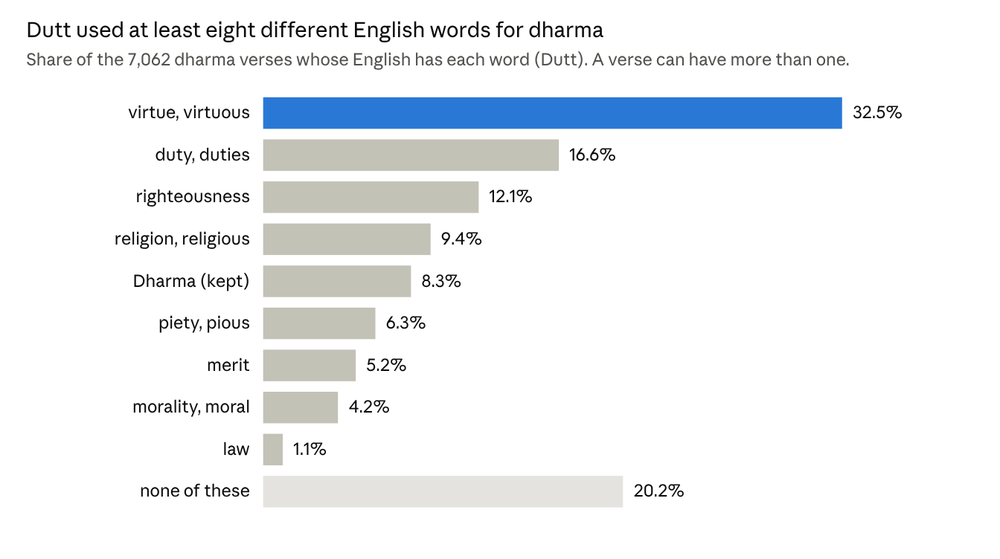
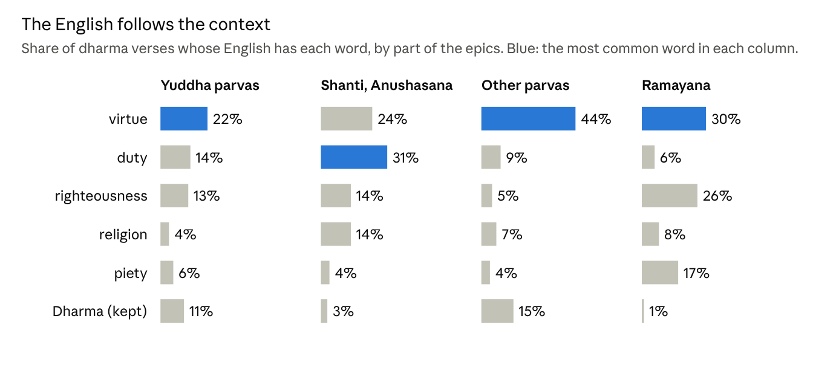
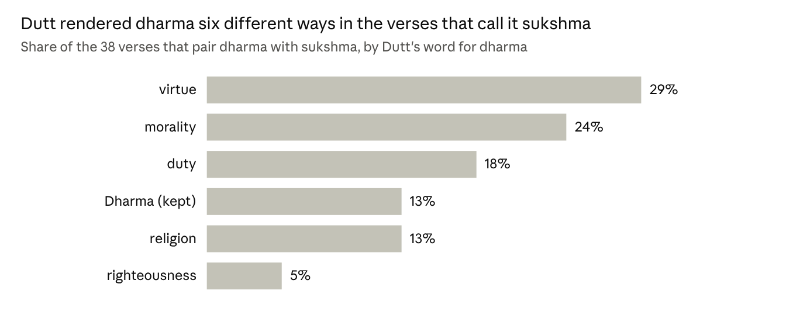
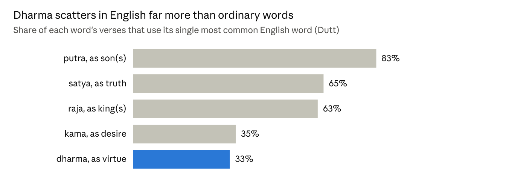

How much Dharma?
Counting one word through the Mahabharata and the Ramayana, first in Sanskrit and then in English.
Monier-Williams’s Sanskrit-English dictionary gives dharma a long list of English meanings, among them “conduct”, “duty”, “justice”, “virtue”, “morality” and “religion”. In Being Different, Rajiv Malhotra takes up this very list and says that none of these words is entirely accurate, and that none “conveys the full force of the term in Sanskrit” (Malhotra, ch. 5). Hence, for him, something of dharma is always lost when it is carried into English.
He also explains why no single word can do the job. Dharmic ethics, he writes, are “formulated in response to the situation and context of the problem”, whereas the Western traditions value rules that are meant to hold in all times and places (Malhotra, ch. 4). He borrows the terms “context-free” and “context-sensitive” for this contrast from A. K. Ramanujan’s well-known essay “Is There an Indian Way of Thinking?” (Ramanujan). Malhotra then goes a step further. Translation, he argues, “digests” Sanskrit ideas into Western categories, so what comes out in English is no longer the idea that went in. He and Satyanarayana Dasa Babaji make this case at length in Sanskrit Non-Translatables (Malhotra, ch. 5; Malhotra and Babaji, ch. 1).
These claims can be tested with data. In this essay, I test them on the two itihasas, the Mahabharata and the Ramayana.
By context-sensitive, Malhotra means that what dharma asks of a person depends on who that person is and on the situation they are in. The dharma of a king is not the dharma of a student, and what is right in a time of crisis may be wrong in a time of peace. If this is true, then the word dharma should also keep different company from one part of the itihasas to another. Part One checks this directly in the Sanskrit. I count where dharma appears and which Sanskrit words appear next to it, and I look at what the itihasas themselves say about dharma.
Part Two looks at what happened to dharma in English. For this, I use a translation in which every Sanskrit verse is paired with its English, 93,030 verses in all. Hence, it is possible to see which English word the translator chose each time dharma appears.
So what did the counting show? In short, the Sanskrit bears out what Malhotra describes, and the English shows the very loss he warns about.
In Sanskrit, the word dharma stays the same everywhere, but the words around it change a great deal from one context to another. Only a small group of companions stays with it in every context, and this small group is its constant. The itihasas even say this about themselves. Again and again they call dharma sukshma, a word for what is real and exact but too fine to be grasped at a glance. They indicate that it has to be discerned with care in each case.
In English, the translation did not flatten dharma into one word, as I first expected. Rather, it broke dharma into many words, such as “virtue”, “duty”, “righteousness”, “religion” and “piety”, and picked one to suit each verse. At first this looks like the context-sensitivity that Malhotra describes, but it works in the opposite direction. In Sanskrit, the context decides what dharma asks of a person, while the word itself stays the same. Hence, the reader always knows that the dharma of a king, the dharma of a warrior and the dharma of Rama are one dharma seen in different situations. In English, the translator makes that decision before the reader ever sees the verse, and the decision is hidden inside the choice of word. A reader who sees “duty” in one verse and “religion” in the next has no way to know that both stand for the same Sanskrit word, or that the two verses are speaking about the same thing. In other words, the English keeps the variable but loses the constant.
The Data
The Sanskrit half uses the Digital Corpus of Sanskrit (DCS), built by Oliver Hellwig (Hellwig). In the DCS, every word has been separated from its sandhi and tagged with its dictionary form. Hence, a search for dharma also finds dharmena, dharmat and the dharma inside a compound such as svadharma. I used four texts. The first two are the Mahabharata, which has about 1.15 million words in 1,995 chapters, and the Ramayana, which has about 260,000 words in 606 chapters. For comparison, I also used two dharmashastras, the Manusmriti and the Yajnavalkyasmriti.
One point needs to be clear. The DCS uses the critical edition of both itihasas. For the Mahabharata, this is the edition prepared at Pune. For the Ramayana, it is the one prepared at Baroda. The chapter counts above match these two editions. To make a critical edition, the editors compared hundreds of old manuscripts and left out passages that appear in only some of them. Hence, Part One counts only the text that the editors kept. The popular printed editions that most readers know include many more verses.
The English half uses the Itihasa corpus, released by Rahul Aralikatte and his colleagues (Aralikatte et al.). It pairs 93,030 Sanskrit verses of the two itihasas with the English translation of Manmatha Nath Dutt, which was published in Calcutta in the 1890s and early 1900s (Dutt). Hence, for every verse that has dharma, I can see which English word Dutt chose for it. Dutt is a good test case, because his translation comes from the colonial period, when much of the standard English vocabulary for Hindu texts was settled.
I measure two things in this essay. The first is how often dharma appears. I give this as a count per 10,000 words, so that a long book and a short book can be compared fairly. The second is which words appear close to dharma. I call a word a companion of dharma when it appears within five words of dharma much more often than it appears elsewhere in the text. For the English half, I took every verse whose Sanskrit has dharma and checked which of nine English words (or their close forms) appear in its translation.
Part One: Dharma in Sanskrit
Where dharma appears most

Dharma is not spread evenly through the Mahabharata. The war itself is told in four parvas: the Bhishma, Drona, Karna and Shalya Parvas. In these four, dharma appears only 12 to 22 times in every 10,000 words. The Shanti Parva is very different. Here Bhishma lies on his bed of arrows and teaches Yudhishthira about rajadharma, about right conduct and about moksha. In this parva, dharma appears 92 times in every 10,000 words, which is nearly eight times as often as in the Bhishma and Drona Parvas.

The Ramayana shows the same pattern. Dharma is most common in the Ayodhya Kanda (58 times in every 10,000 words), which tells of Dasharatha’s promise and Rama’s exile. It is least common in the Sundara Kanda (15), the story of Hanuman’s journey to Lanka, and in the Yuddha Kanda (20), the story of the war with Ravana. Hence, dharma comes up most where someone faces a hard choice (as Dasharatha does when he is bound by his promise) and least where the story is about action, whether it is a journey or a battle.
The company it keeps
The words around dharma also change from one part of the itihasas to another. In the four war parvas, its strongest companion is kshatra, as in kshatra-dharma, the dharma of the kshatriya. Kshatra appears near dharma 82 times more often than it does elsewhere in these parvas. These parvas also hold the best-known line about dharma in the Mahabharata. It is yato dharmas tato jayah, “where dharma is, there is victory”, and it appears in thirteen chapters of the epic.
In the Shanti and Anushasana Parvas, the company of dharma moves towards the king and the self. Here its companions include rajan (king), praja (the people of a kingdom), moksha, ahimsa and setu. A setu is a bridge or a dam. Hence, dharma-setu is the embankment that keeps a society within its limits.
In the Ramayana, dharma becomes a quality of a person. The clearest example is dharmatman, one whose very self is dharma, which occurs 178 times. Two other companions show the same thing. A dharmavatsala is one who cares for dharma the way a parent cares for a child, and a satyasandha is one who is always true to a promise.
In the dharmashastras, dharma becomes a rule. The Manusmriti even tells the king to study the dharmas of each jati, each region, each guild and each family, and only then decide what dharma applies (8.41). In other words, dharma does not mean the same thing in every place. It takes its meaning from the place it is in.
The itihasas call dharma sukshma
The itihasas say this about themselves. Again and again, their characters say that dharma is sukshma. English usually renders sukshma as “subtle”. However, the two words do not mean the same thing. In English, “subtle” usually describes something faint, delicate or understated, and a “subtle” point often sounds like a matter of opinion. In Sanskrit thought, sukshma names a real level of things that is finer than what the senses can grasp. It is set against sthula, the gross or visible. The sukshma sharira, for example, is a body that is real but cannot be seen, and Malhotra and Babaji list it among their non-translatables. Hence, to call dharma sukshma is not to call it vague or uncertain. Rather, it says that dharma is real and exact, but works at a level too fine to be caught by a rule, and so has to be discerned in each situation. This is one more reason to keep sukshma in Sanskrit as well.
In the Mahabharata, dharma appears next to sukshma in 34 verses. It appears next to apad (a crisis, as in apad-dharma, the dharma of hard or difficult times) in 25 verses, and next to desha (place) in 17. A handful of verses also call dharma durvida or gahana. Durvida joins dur (hard) and vid (to know), and so means roughly “hard to know”. Gahana is also used for a deep, dense forest that is hard to enter, and so means roughly “deep” or “hard to get into”.
One example shows what this means in practice. In the Mahabharata, Draupadi is to marry all five Pandavas, and her father Drupada objects. He has in mind the usual rule, that a woman has only one husband, and he calls the marriage adharma. Yudhishthira does not answer him with another rule. Rather, he says sukshmo dharmo maharaja nasya vidmo vayam gatim, “dharma is sukshma, O king, and we do not know its course”, and adds that they follow the path that those before them have walked (1.187). In other words, the general rule alone cannot decide whether this marriage is dharma. The answer depends on facts that belong to this case alone, and the epic goes on to give them. Soon after, Vyasa tells Drupada about Draupadi’s previous birth, in which she asked Shiva five times for a husband, and only then does Drupada agree. Hence, the context-sensitivity that Malhotra describes is not a reading laid on the itihasas from outside. The Mahabharata itself says that dharma cannot be known apart from its situation.
Dutt’s English turns this line into “morality is subtle”, and the change is more serious than it looks. “Morality” makes dharma sound like a matter of private conscience, and “subtle” makes it sound vague. Hence, an English reader hears Yudhishthira say, in effect, that right and wrong are unclear here, which sounds like an excuse for an unusual marriage. The Sanskrit says almost the opposite. It says that dharma is real and exact, but too fine for a general rule, and so must be found in the case at hand. In other words, the one line in which the epic states the context-sensitivity of dharma most plainly becomes, in English, a line that seems to weaken dharma itself.
A constant at the centre

But if the company of dharma changes this much, does anything stay the same? To find out, I split the texts into five groups. These are the four war parvas, the Shanti and Anushasana Parvas, the other parvas of the Mahabharata, the Ramayana and the dharmashastras. I took the forty strongest companions of dharma in each group and looked for words that appear in at least four of the five groups. Fourteen words do.
The first two are artha and kama, the two other purusharthas that dharma is always set beside. Next come adharma, its opposite, and satya. Then come sanatana and parama, as in sanatana dharma and parama dharma. A few word endings also stay. These are -jna and -vid, as in dharmajna (one who knows dharma), and -bhrit, as in dharmabhrit (one who upholds dharma). The rest are a few verbs of practice.
I then ran the same test on five other common words. None of them keeps as many of its companions from one group to the next as dharma does. Even so, the overlap for dharma is only 0.25 on average, which means that about three quarters of its companions change from one group to another. Hence, dharma has a constant at its centre and a much larger part that changes with the context.
Part Two: Dharma in English
One word becomes many

In 7,062 of the 93,030 verses, the Sanskrit contains the word dharma. In about a third of these verses, Dutt’s English has “virtue” or “virtuous”. The rest are spread across “duty”, “righteousness”, “religion”, “piety”, “merit”, “morality” and “law”. Dutt kept the word “Dharma” in only one verse in twelve. Even then, it is often part of a name for Yudhishthira, such as “the son of Dharma”.
That leaves a fifth of the verses with none of these nine words. I read a random sample of them to see what Dutt did there, and found four kinds of verses. In many, the Sanskrit has adharma, the opposite of dharma, and Dutt wrote “sin”, “unrighteous” or “impiety”. In others, dharma became yet another English word, such as “justice”, “conduct”, “practice”, “usage”, “ordinance” or “rules”. In some, a name such as Dharmaraja became simply “the king” or “Yudhishthira”. And in some, dharma left no trace in the English at all. For example, a verse saying that the king must protect all who live in his kingdom dharmena (by dharma) becomes “All the dwellers in his dominions should be protected by the king”.
But do these English words really stand for dharma, or would they turn up anyway? A simple check answers this. Take “religion”. It appears in 9.4% of the verses that have dharma, but in only 0.3% of the verses that do not. In other words, when Dutt writes “religion”, the Sanskrit almost always has dharma in it. “Virtue” shows the same pattern, at 32.5% against 1.3%. Hence, these are the words Dutt reached for almost exclusively when he met dharma, and he rarely used them for any other Sanskrit word.
The word “religion” deserves a closer look. In Being Different, Malhotra writes that the common translations of dharma as “religion”, “path”, “law” and “ethics” all fall short (Introduction). He calls the treatment of dharma as religion “a major blunder”, and he describes religion as only one subset of what dharma covers (ch. 5). Yet Dutt’s English uses “religion” for dharma in nearly one verse in ten. In the Shanti and Anushasana Parvas, where the Mahabharata sets out its teaching on dharma most fully, the share rises to one verse in seven. “Law” and “morality” are among Dutt’s words too, and morality is close to what Malhotra calls ethics.
The English follows the context

To be fair to Dutt, his English is not careless. His choice of word changes from one part of the itihasas to another. In the Shanti and Anushasana Parvas, “duty” is his most common word, whereas in the Ramayana “righteousness” and “piety” are far more common than anywhere in the Mahabharata.
However, the compounds show what kind of context-sensitivity this is. Kshatra-dharma, svadharma and raja-dharma each become “duty” in about 63% of their verses. In other words, whenever Dutt meets one of these compounds, he most often turns it into the same English word, no matter what the rest of the verse says. This is very different from the context-sensitivity of the Sanskrit. Malhotra describes the dharmic way as one that balances universal truths with those that “can be determined only in the context in which they occur” (Malhotra, ch. 4). In the same chapter, he lists the kinds of dharma that do this work, such as the dharma of one’s stage of life, of one’s jati, of one’s own nature and of a time of crisis (ch. 4). Svadharma is one of these, and its whole point is that it differs from person to person. The English word “duty”, on the other hand, suggests a fixed obligation that is the same for everyone who holds the same post. Hence, the English answers the very question that svadharma leaves open. Dutt’s English does change with the context, but only by moving from one fixed word to another. Rather than leaving the context to the reader, it settles the context for the reader. Even so, each of Dutt’s words was chosen with care, and most of them fit their own verse.
The same teaching, many words

But this care has a cost, and the cost shows most clearly where the Sanskrit repeats itself. Take the teaching that dharma is sukshma. A reader of the Sanskrit meets the same two words, sukshma and dharma, every time this teaching comes up, and hence learns that it is one teaching that runs through the whole Mahabharata. A reader of Dutt’s English, on the other hand, hears Yudhishthira say that “morality is subtle”, a fowler say that “the ways of virtue are subtle” and Krishna tell Arjuna that “religion is very subtle”. Across the 38 verses that pair the two words, Dutt uses six different renderings. Hence, the English reader meets three different ideas (morality, virtue and religion), whereas the Sanskrit repeats the same word dharma each time. This matters because the repetition is itself the teaching. By saying again and again that dharma is sukshma, the Mahabharata trains its reader to expect that what is right must be worked out in each case. The English reader never receives this lesson, and so reads each line as a passing remark rather than as one of the central teachings of the epic.
The same happens with yato dharmas tato jayah, a half-verse that the epic repeats like a refrain. In Dutt’s English it is “where there is virtue there is victory” in one place and victory “would be there where righteousness would be” in another. The Sanskrit repeats the line word for word so that it is remembered. The English turns it into two different sentences that no reader would think to connect.
Dharma breaks apart more than other words

But does every Sanskrit word break apart like this in English? To check, I compared dharma with four other common words. For each word, I found the English word Dutt used for it most often, and then counted how many of its verses use that one English word. Putra is “son” in 83% of its verses, satya is “truth” in 65% and raja is “king” in 63%. Dharma, on the other hand, is “virtue” in only 33%.
At first, a low number might look like a good sign, since it shows that Dutt did not reduce dharma to one English word. However, that number means something else. It means that the one Sanskrit word reaches the English reader as many unrelated words. For putra, the English reader meets “son” in most verses, and so follows the same idea from one verse to the next. For dharma, the English reader meets “virtue” in one verse, “duty” in the next and “religion” in the one after that, and so cannot follow it at all. Hence, the lower the number, the more the one idea is lost from view.
Kama, at 35%, breaks apart almost as much as dharma. It is worth noting that Malhotra and Babaji list kama among their fifty-four non-translatables (ch. 11). Hence, of the five words tested, the two that break apart most in English are dharma and kama. These are two of the four purusharthas, whereas the words for a son or a king stay whole. It seems that the more weight a word carries, the more a translator feels that it cannot mean just one thing in English. That feeling is right, since dharma does have many shades. However, in splitting the word apart, the translation loses the other half of the truth, which is that all these shades are still one dharma. This is exactly the loss that Malhotra and Babaji warn about.
The Constant and the Variable
The two parts of this essay point in the same direction. In Sanskrit, dharma has both a constant and a variable. The word itself never changes, and it keeps a small core of companions in every text. The rest of its companions change as the setting moves from the battlefield to the royal court to Rama’s forest. In English, only the variable survives. Dutt gives each setting its own word, and so the one word that tied all these settings together is gone. Hence, what is lost in translation is not any single meaning, since Dutt finds a fair word for most verses. Rather, what is lost is the knowledge that duty, virtue, righteousness, religion and morality are one idea. This is what the “digestion” that Malhotra and Babaji describe looks like when it is counted.
The loss also did not stay in the 1890s. In a separate study, I asked four AI chatbots to translate verses of the Bhagavad Gita (Iyengar). They dropped the Sanskrit term in 86 of 96 answers. That is about as often as published human translators did, and the chatbots most likely learned this habit from those very translations. Hence, choices that translators made more than a century ago are still being repeated today, on a much larger scale.
What the Counting Cannot Show
The numbers show a clear pattern. However, counting words is not the same as reading a verse the way a commentator does. Hence, these results have real limits.
- This study compares dharma across contexts. It does not show how, or whether, the meaning of dharma changed over time.
- The two parts use different Sanskrit texts. Part One uses the critical editions in the DCS. Part Two uses the Sanskrit printed with Dutt’s translation, which follows the older popular editions and includes passages that the critical editions leave out. Each English verse is compared only with its own Sanskrit. Even so, the numbers of the two parts should not be compared directly.
- The matching is done by spelling. In Part Two, a search for dharma also finds it inside compounds such as dharmatman. An English word can also appear in a verse for some other reason. And “Dharma (kept)” includes names of Yudhishthira.
- The Itihasa corpus does not mark which parva each verse belongs to. Hence, I sorted the verses into parvas using the section names in Dutt’s text. These names are not always consistent, and a few chapters may sit in the wrong parva.
- Dutt is one translator. Other translators, such as Kisari Mohan Ganguli or modern scholars, may choose very differently.
- Many choices are mine, such as the window of five words, the top forty companions and the comparison words, and different choices would change the exact numbers.
- When I describe a group of companions, for example as the dharma of the kshatriya or as a quality of a person, that is my reading of the counts. Another reader could describe them differently.
What This Means
Suppose a reader came to the Mahabharata only through Dutt’s English. In that case, that reader would meet a text full of virtue, duty, righteousness and religion, and might naturally read it as a moral tale in the English style. What that reader would miss is how often the epic comes back to one word, and how often it says that this word is sukshma and depends on its situation. Each English word Dutt chose may well fit its own verse. Taken together, however, his words hide the very thing the Mahabharata says most often about dharma. Hence, the case for keeping dharma in Sanskrit rests less on any single bad translation, and more on what many reasonable translations take away when they are added together.
Sources
- Aralikatte, Rahul, et al. “Itihasa: A Large-Scale Corpus for Sanskrit to English Translation.” Proceedings of the 8th Workshop on Asian Translation, Association for Computational Linguistics, 2021.
- Dutt, Manmatha Nath, translator. A Prose English Translation of the Mahabharata. Elysium Press, 1895–1905.
- Dutt, Manmatha Nath, translator. The Ramayana. 1891–1894.
- Hellwig, Oliver. DCS: The Digital Corpus of Sanskrit. 2010–2024, github.com/OliverHellwig/sanskrit.
- Iyengar, Vishnu. “Do AI Chatbots Flatten Sanskrit Non-Translatables?” Finsnovai, 2026, finsnovai.com/writing/do-ai-chatbots-flatten-sanskrit.
- Malhotra, Rajiv. Being Different: An Indian Challenge to Western Universalism. HarperCollins India, 2011.
- Malhotra, Rajiv, and Satyanarayana Dasa Babaji. Sanskrit Non-Translatables: The Importance of Sanskritizing English. Manjul Publishing House, 2020.
- Olivelle, Patrick, translator. Manu’s Code of Law. Oxford University Press, 2005.
- Ramanujan, A. K. “Is There an Indian Way of Thinking? An Informal Essay.” Contributions to Indian Sociology, vol. 23, no. 1, 1989, pp. 41–58.
- The scripts and data behind every number and chart in this essay are available from the author on request.